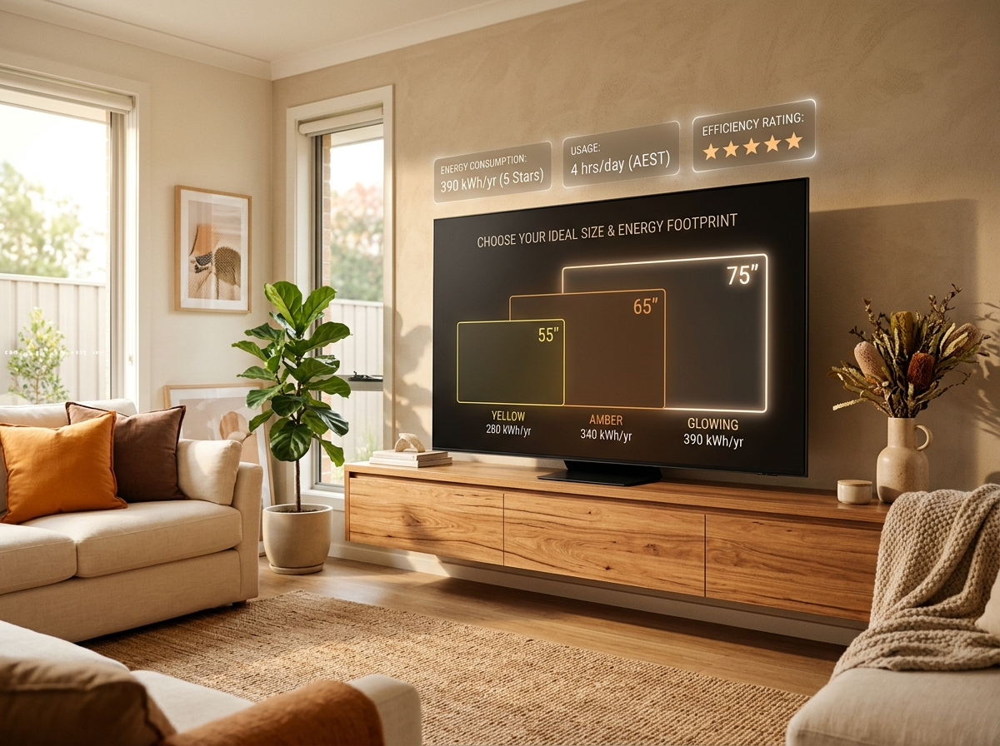
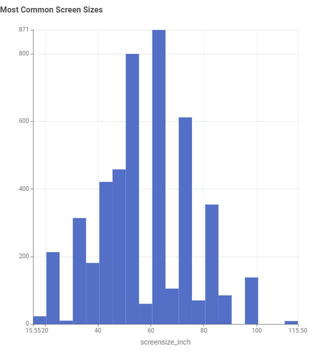

Do You Know What TV Size Actually Suits Your Home?
People don't know what TV size actually suits their home, or how much energy it uses. Most people just pick a size based on their room or their budget, without thinking about the power bill.
Explore the Story
Demonstrate Issue
Most TVs sold are between 55" and 65", and Samsung is currently the top brand by number of models. But most buyers rarely check how screen size affects energy use before they buy — the focus is usually on brand, price or picture quality.


Describe the Approach
If shoppers could easily see how much energy different TV sizes use, they could make a more informed choice before buying — not just after the power bill arrives. To explore this, screen size was compared against yearly energy consumption (kWh/year) using a scatter plot, which shows a clear upward trend — the bigger the screen, the more energy it uses.

Show the Evidence
To make this easier to compare, TVs were grouped into Small, Medium and Large categories. The results are clear — energy use roughly doubles at each size step. Bigger is not just more expensive to buy, it is also more expensive to run every year.

Technology Matters Too
Screen size is not the only factor. Panel technology matters too — some technologies use noticeably more energy than others, even at a similar size, so it is worth checking this alongside size.

Recommendation
Before buying a new TV, think about the size that actually fits your room, not just your budget or the picture quality — and take a look at the panel technology as well. Both of these can make a real difference to your power bill over time.